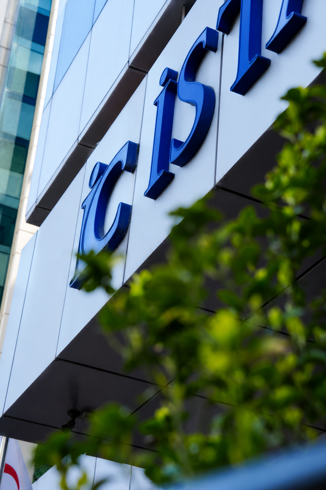
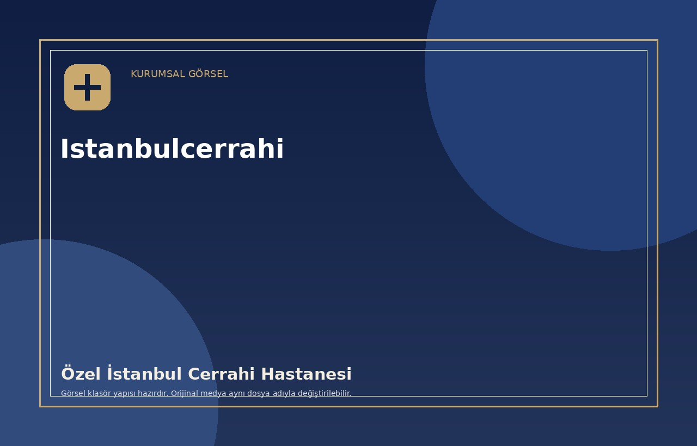
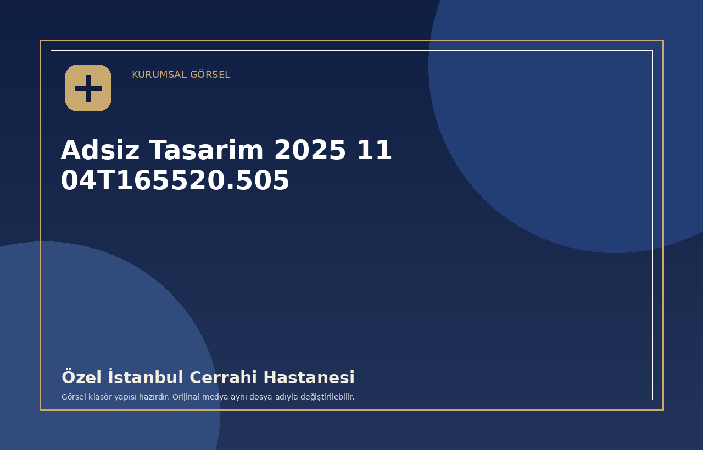
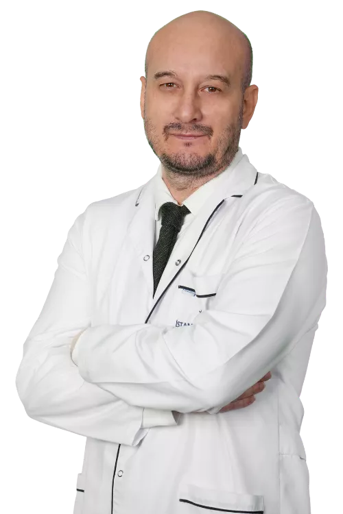
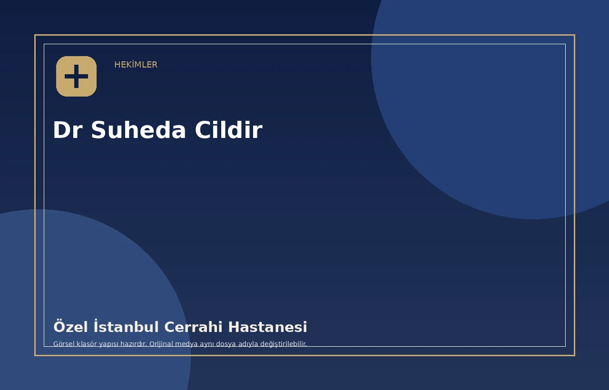
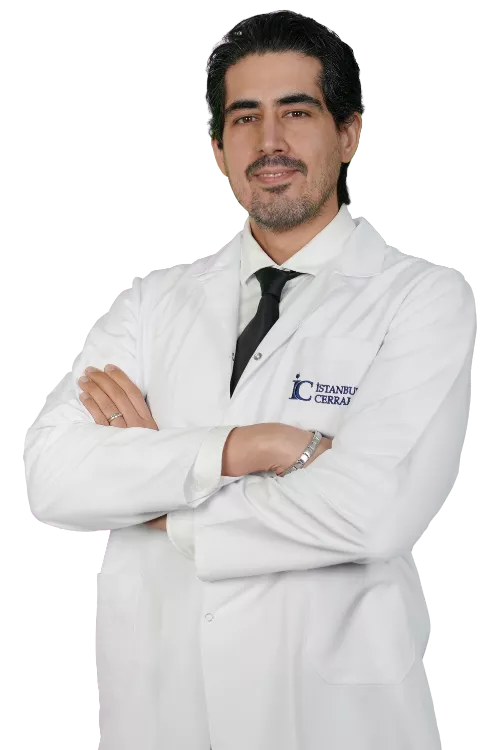

01
Randevu & Bilgi
Randevu talepleriniz için çağrı merkezimize ulaşabilirsiniz
Doktor, tıbbi birim ve uygun saat bilgisi için çağrı merkezimizden destek alabilir; randevu sürecinizi hızlıca planlayabilirsiniz.

Yenilenen yönetim anlayışımızla; hizmet kalitesini, hasta deneyimini ve sağlıkta güven yaklaşımını daha güçlü bir seviyeye taşıyoruz.
Özel İstanbul Cerrahi Hastanesi, 1998 yılından bu yana İstanbul’un merkezinde güven veren, ulaşılabilir ve hasta odaklı sağlık hizmeti sunmaktadır.
Yenilenen yönetim anlayışımızla; modern tıbbi altyapıyı, uzman hekim kadrosunu ve kişiye özel sağlık deneyimini daha güçlü bir kurumsal yapı altında bir araya getiriyoruz.
Amacımız; hastalarımızın tanı, tedavi ve takip süreçlerinde kendilerini güvende hissettikleri, sade ve kaliteli bir sağlık deneyimi oluşturmaktır.


Cerrahi ve medikal branşlarımızı premium, anlaşılır ve hasta odaklı bir yapıyla sunuyoruz. Detaylı bilgi için ilgili birim sayfasına geçebilirsiniz.
Obezite ve metabolik sağlık alanında değerlendirme, ameliyat öncesi hazırlık ve takip süreçleri kişiye özel planlanır.
Detaylı BilgiEstetik ve rekonstrüktif cerrahi süreçlerinde doğal sonuç, hasta güvenliği ve konfor odağıyla ilerlenir.
Detaylı BilgiKarın içi organlar, sindirim sistemi, fıtık, tiroid, meme ve yumuşak doku hastalıklarında cerrahi değerlendirme süreçleri planlanır.
Detaylı BilgiOkları kullanarak hekimler arasında geçiş yapabilir, ortadaki hekimin profilini inceleyebilir ve tanıtım videosu alanına ulaşabilirsiniz.




Tanıdan tedaviye kadar her aşamada güven, açıklık ve hasta konforunu merkeze alan bir sağlık deneyimi sunmayı hedefliyoruz.
SGK, özel sağlık sigortası ve tamamlayıcı sağlık sigortası kapsamındaki süreçler için çağrı merkezimizden bilgi alabilirsiniz.
Acil servis ve ilgili birim yönlendirmeleriyle ihtiyaç duyduğunuz anda sağlık hizmetine erişebilirsiniz.
Alanında deneyimli hekimlerimiz, tanı ve tedavi süreçlerini hastanın ihtiyacına göre planlar.
İlk iletişimden takip sürecine kadar sade, anlaşılır ve güven veren bir hasta deneyimi oluşturulur.
Randevu, sigorta, hasta kabul ve ziyaret süreçleriyle ilgili en çok merak edilen başlıkları sizin için derledik.
Özel İstanbul Cerrahi Hastanesi’nde aldığınız hizmetle ilgili deneyiminizi paylaşarak hizmet kalitemizi geliştirmemize katkı sağlayabilirsiniz.
Google'da DeğerlendirUzmanlık alanlarına göre hazırlanmış bilgilendirici içerikleri inceleyebilirsiniz.
 Üroloji
ÜrolojiProstat, erkek üreme sisteminde mesanenin altında yer alan ve idrar kanalıyla ilişkili bir bezdir. Yaşla birlikte büyüme, idrar yakınmaları ve farklı prostat hastalıkları gündeme gelebilir.
Devamını Oku → Üroloji
ÜrolojiPenil protez implantasyonu, ereksiyon fonksiyonunun ileri düzeyde etkilendiği hastalarda uzman hekim değerlendirmesiyle planlanan cerrahi bir tedavi seçeneğidir.
Devamını Oku → Üroloji
ÜrolojiVarikosel, testis çevresindeki toplardamarların genişlemesiyle ortaya çıkan ve bazı hastalarda ağrı, ağırlık hissi veya üreme sağlığıyla ilgili sorunlara neden olabilen bir durumdur.
Devamını Oku →Randevu, tıbbi birim bilgisi, sigorta kapsamı veya doktor yönlendirmesi için bize telefon ya da WhatsApp üzerinden ulaşabilirsiniz.